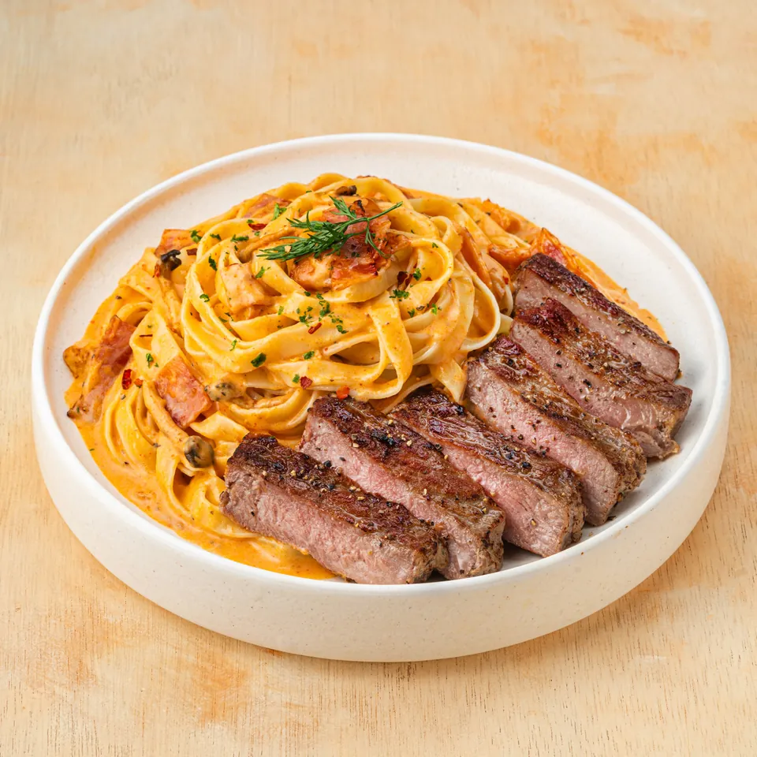
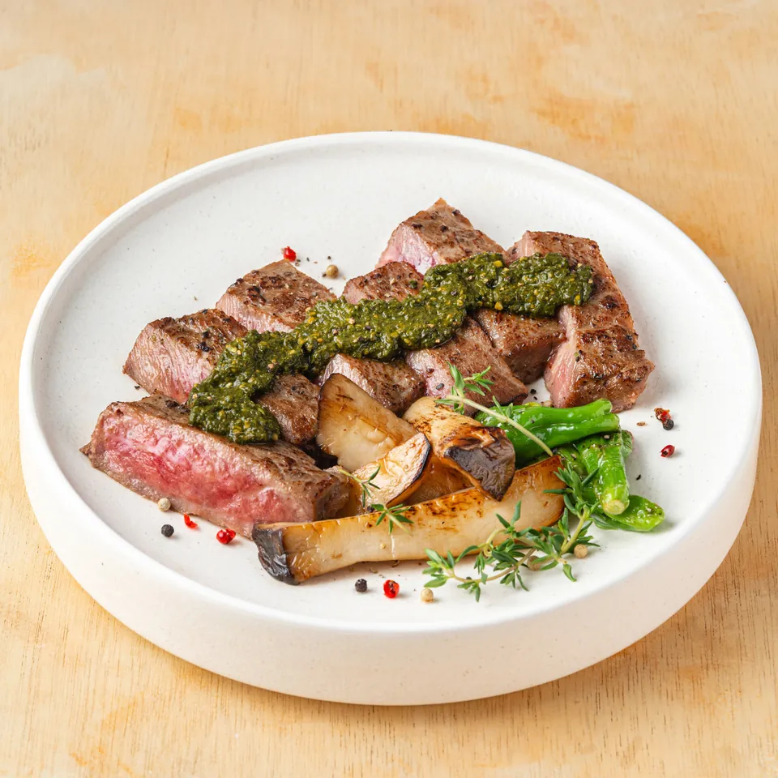

タントタント 탄토탄토
イタリアン · ソウル 建大入口駅から徒歩5分
タントタント（탄토탄토）は、ソウル広津区・建大入口駅近くにあるカジュアルなイタリアンレストランです。オレンジの照明と窓際の黄色いソファの店内で、みんなでシェアできるパスタ、リゾット、ステーキをご用意しています。ワインと日本酒の持ち込みは無料です。
店舗情報
- 住所
- ソウル特別市 広津区 峨嵯山路33ギル 49 2階
서울 광진구 아차산로33길 49 2층 - 最寄り駅
- 建大入口駅（2号線・7号線）2番出口から徒歩5分（約350m）
- 営業時間
- 毎日 11:00〜22:00（定休日なし）
- ブレイクタイム
- 平日 15:00〜17:00 ・ 土日 15:00〜16:00
- ラストオーダー
- ランチ 平日14:30 / 土日14:50 ・ ディナー 20:50
- 予算
- 1人 約10,000〜30,000ウォン。パスタ14,800ウォンから、ハウスステーキ32,800ウォン
- 予約
- CatchTable・NAVER予約（6名まで）。7名以上は電話 +82-2-2039-2915
- 持ち込み
- ワイン・日本酒は無料、ウイスキーは1本30,000ウォン
- お子さま連れ
- 歓迎、ベビーチェアあり
- 駐車場
- 専用駐車場なし。近くの有料駐車場（한아름 528주차장）をご利用ください
- 電話
- +82-2-2039-2915
アクセス
- 建大入口駅2番出口を出て、大通りをまっすぐ進みます（オリーブヤング、サーティワン、ダイソーを通過）。
- メガMGCコーヒー（메가MGC커피）の角で、横断歩道のある路地へ左に入ります。
- 「시선（シソン）」の前で右に曲がり、少し上ります。
- 左手の建物の2階がタントタントです。駅から徒歩約5分です。
メニュー
注文の際に指さしできるよう、韓国語のメニュー名も載せています。価格は税込みです。
おすすめメニュー

サーロインステーキ・クリームパスタ 채끝스테이크 크림
ピリ辛クリームのタリアテッレにサーロイン100g。一番人気です。
19,800ウォン
シャクシュカ（エッグインヘル） 샥슈카(에그인헬)
ピリ辛トマトソースにショートパスタと落とし卵3個、バゲット付き。
19,800ウォン
明太子アーリオオーリオ 명란 알리오올리오
明太子とししとうのオイルパスタ。あっさりした味です。
15,800ウォン
ブリーチーズとバジルのニョッキ 브리&바질 뇨끼
バジルのニョッキにブリーチーズとドライトマト。
18,800ウォン
ハウスステーキ 하우스 스테이크
オーストラリア産サーロイン200gと焼き野菜。
32,800ウォン
全メニュー
パスタ
| セリのボンゴレ미나리 봉골레 | 18,800ウォン |
| 黒トリュフクリームパスタ블랙트러플 크림 | 21,800ウォン |
| ラザニア라자냐 | 19,800ウォン |
| トリュフ・アーリオオーリオ트러플 알리오올리오 | 15,800ウォン |
| トゥーンバパスタ투움바 | 15,800ウォン |
| スパイシークリームパスタ스파이시 크림 파스타 | 14,800ウォン |
| ホタテのクリームパスタ관자 크림 파스타 | 18,800ウォン |
| ブッラータのポモドーロ부라타치즈 뽀모도로 | 18,800ウォン |
| サーモンステーキのロゼパスタ연어스테이크 로제 | 17,800ウォン |
| シーフードトマトパスタ해산물 토마토 | 17,800ウォン |
| エビのロゼパスタ쉬림프 로제 파스타 | 15,800ウォン |
ライス・リゾット
| タント・キムチチャーハン탄토 김치볶음밥 | 16,800ウォン |
| セリとステーキの釜飯미나리 스테이크 솥밥 | 22,800ウォン |
| トマトステーキリゾット토마토 스테이크 리조또 | 19,800ウォン |
| ホタテのロゼリゾット관자 로제 리조또 | 18,800ウォン |
| エゴマクリームリゾット들깨 크림 리조또 | 17,800ウォン |
ステーキ・サラダ・タパス
| BBQチョップステーキ＆トリュフフライBBQ찹스테이크 & 트러플감자튀김 | 18,800ウォン |
| ブラックペッパーチョップステーキ＆トリュフフライ블랙페퍼 찹스테이크 & 트러플감자튀김 | 18,800ウォン |
| ガンバス（エビのアヒージョ）감바스 | 13,800ウォン |
| ステーキサラダ스테이크 샐러드 | 17,800ウォン |
| 季節のフルーツとリコッタのサラダ계절과일 & 리코타 샐러드 | 12,800ウォン |
| ブッラータとルッコラのサラダ부라타 루꼴라 샐러드 | 14,800ウォン |
よくある質問
予約は必要ですか？
予約なしでも入店できますが、週末の夜は混み合います。CatchTableまたはNAVER予約で6名まで予約できます。7名以上はお電話ください。
韓国語が話せなくても注文できますか？
はい。このページのメニューには韓国語名も載っているので、スタッフに見せて注文できます。
ワインを持ち込めますか？
はい。ワインと日本酒は持ち込み無料です。ウイスキーは1本30,000ウォンです。
子ども連れでも大丈夫ですか？
はい。お子さま歓迎で、ベビーチェアもあります。
予算はどのくらいですか？
1人あたり約10,000〜30,000ウォンです。パスタは14,800ウォンから、ハウスステーキは32,800ウォンです。
公式リンク
GoogleマップNAVERマップCatchTable（予約）Instagram한국어 (tantotanto.store)